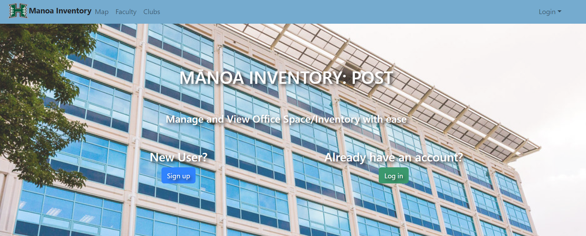

At the beginning of the semester we formed our group to complete our task of creating a web application to keep track of the 3rd floor POST infrastructure. For the first few milestones I was not able to gague how much work we were able to to within a short amount of time. However, we got the first few pages and we eventually took off with progress. We agreed to delegate tasks and have people work on what they were most comfortable with which was relieving. We hoped that everyones effort would later come together for something good. Since everyone was working on their own individual things, it was hard to understand what was happening but having code reviews helped alleviate this issue.
Our project eventually got to the point where it was the title of this section, mid. Sub-par to all the other projects at the time and it felt that our progress had slowed down a lot. Work would be done here and there but we did not make substancial progress until the day or two before customer milestones. I, personally felt lost as we all continued down our own paths without communicating with each other. Sometimes work would be redone, reverted or even deleted because of some error. I had thought we needed better guidance on what we needed to be working on next but we had never established that.
Through the end up until the final milestone, we all began to ramp up in production. Lots of things got done and everything started to come together. There were still bits and pieces missing that we thought we should just cut out of the project. During the final week, there were changes here and there, so much so that it was hard to keep track of what was added. Fortunately, the hardwork that was put into the project finally displayed and I believe we were all fairly satisfied with our result. I think it would have helped to have someone in a position where they can deal out tasks based on what needs to be done, then, only one person is considering whether something is missing, rather than everyone thinking the same thing.
To reflect, I think we could have done a much better job at making the application, making new features, and making things much nicer. However, we live and learn and I believe we all had our fair share of stress and fun coding along with one another to make a product that had the potential of being used. I think that having a customer really helped and was a good representation of what things will be like in the future for software engineers. Overall, I really enjoyed this project and the classmates, and the class I had, but, I do not think I would take the class again for fun.